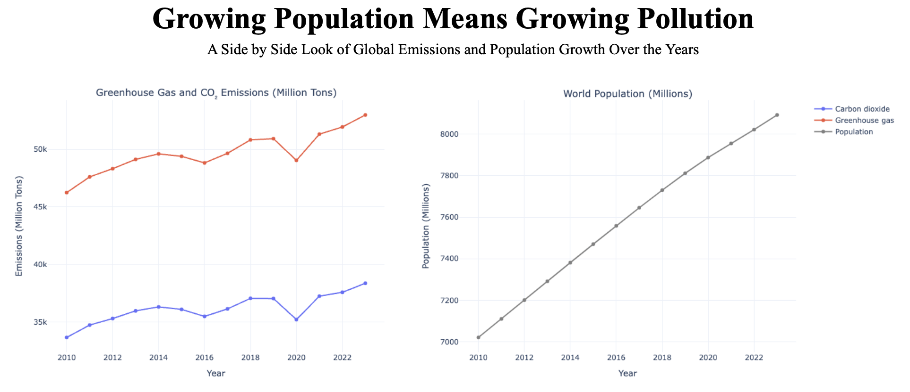
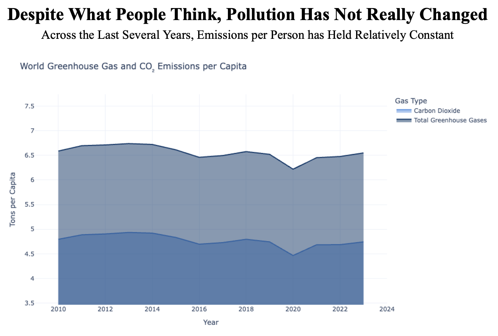

Proposition: Population growth carriers harmful consequences against the environment in terms of global pollution
FOR the Proposition

Design Decisions and Rationale:
- Plotting CO₂ emissions along with greenhouse gas emissions (2): This was purely to add another layer of interest and insight into the graph. Including these two gas types was meant in no way to deceive the viewer but rather to see how trends in greenhouse gas emissions follows CO₂ emissions. While I could've also included the other gas types, because their values were all quite a bit lower than CO₂ and greenhouse gases, they would've just been clumped at the bottom of the graph making it difficult to see trends in them.
- Use of side-by-side line plots with a shared time axis (1): Placing the emissions chart and population chart (supplementary population data that I took from Worldometer) next to each other lets viewers instantly compare their upward slopes which makes the linkage between more people and more pollution visually obvious. In my opinion, the one thing that makes the side by side line plots not fully earnest is that they do not share the same y-axis which could be a bit confusing at first. However, because I am plotting two different metrics here, it is reasonable to use two different plots and y-axis rather than overlaying it all on one plot as then the location of each line would not make visual sense.
- Plotting raw totals on an appropriately scaled y-axes (2): Showing total emissions in million tons and total population in millions (with realistic baselines) preserves true magnitude and avoids misleading compression, so the growth trends not only feel real but also substantial. While I could've chose to plot the percentage growth across the years instead of raw values for both emissions and population, this would have created flatter lines that appear more constant which would visually not show growth trends as well.
- Placing dots along the lines for the relative year(1): Including these dots as visual indicators of the year along the line makes it easier for the viewer to compare both vertically and horizontally across different lines so the correlation in growth is more apparent. While I do think this is mostly earnest, I can also see a slight hint of deception as placing dots along the lines can break up any possible "smoothness" to make differences seem more apparent. However, given that I wanted to make the comparisons easier, I opted to include the dots.
AGAINST the Proposition

Design Decisions and Rationale:
- Metric swap to per-capita values (-2): By plotting emissions “per person” instead of total tons, the chart reframes the story to imply individual impact has stayed flat, even though aggregate emissions climbed. At first sight, and especially if one does not have a firm grasp on the topic, an argument that pollution has not really changed in the past years can be mindlessly made. While I could've also plotted percentage change to visually display a flatter graph, I found this method to be more unique and relevant in terms of still framing it with respect to people and not just purely emissions.
- Flattening the y-axis (-1): Flattening the vertical scale visually flattens the series, making year-to-year changes look more negligible and downplaying any real variability. Another option I had could've been to add more tick marks on the y axis which would have also flattened the series however doing so would've made the deception technique much more obvious as there would be obviously large empty space on the top on bottom.
- Highlighting the area under the curve (-1): The main goal when doing this was to make the graph appear more "boxy". Because the left, right, and bottom edges of the graph are perfectly flat, it is cognitively natural for the viewer to try and complete the rectangle by making the top edge flat as well which would enhance the appearance of a rather constant change across the years. Simply leaving each line like how it is could've worked too but I believe shading in the area underneath makes the flattness more convincing.
- Removal of the dots along the lines (-0.5): By excluding the dots along the line (contrary to the first visualization), the line appears to be smoother which makes the overall trend appear to be more constant. In the grand scheme, I do not believe this makes that much of a visual difference however it can be argued that it is harder to make year-to-year comparisons, especially between 2010 and 2014. Including dots would've only made differences more obvious so it was clear to me that I should just remove them.
Final Reflection
Overall, the design process for both of the visualizations were quite fun and intriguing. Given that I wanted to explore the relationship between population and pollution, it was also very satisfying to find a population dataset online to then plot the growth trends side by side and create new variables such as emissions per capita. Some of the inspirational examples from project 1 definitely kicked in during this project and I am glad that I was able to add my own uniqueness and creativity to it.
Throughout this process, my overall idea and execution for the persuasive visualization felt pretty straighforward as I knew what I wanted to show and how to do it. However coming up with a deceptive graph against the proposition was rather difficult for me. I think this primary had to do with the fact that it felt wrong to come up with something to deceive an audience. Truthfully, my deceptive graph purely came from playing around with the data and graphing various visualizations until I had one that I was satisfied with. Going in to it, I thought it would be rather easy to come up with something to purposely decieve viewers however this was definitely one of the bigger surprises for me as it was definitely not as easy as I had thought. In a way, this felt like I was going against my morals.
After going through this project, I define ethical analysis and visualization as the practice of revealing insights without obscuring the conditions, uncertainties, or competing interpretations baked into the data. In other words, I believe the act of manipulating data or plot features to support a claim is wrong. Rather, a good and supportive plot should be able to be made with the original data and correct plot features. Furthermore, persuasive choices such as highlight colors, annotations, or focusing on a subset that answers a clear question, remain acceptable so long as a reasonable reader could still reconstruct the underlying reality with minimal effort. I think the the boundary is crossed when design decisions systematically impede that reconstruction such as truncating, unlabeling axes, scale distortions that invert trends, or selective omissions that hide contradictory evidence. In short, persuasion is fair when it clarifies and it becomes misleading when it conceals or distorts the evidence needed for an informed judgment.